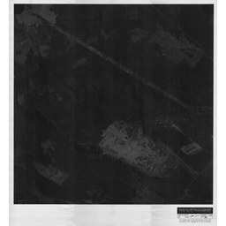

{
"schema_version": "real_pilot_intelligence_packet_v1.0.0",
"packet_id": "real-pilot-intelligence:d60a43114595eba0f0aced71",
"numeric_id": 11118,
"record_id": "mtl_archives_metadata_11118.json",
"lane": "aerial_land_use_georeference",
"lineage": {
"selection_sha256": "7c3729108057b374f2a108d0e3f556abcbec402d071b89268269c71340f9b96f",
"promotion_sha256": "8fe075ab8770891662b3b78045ea77d179455af893fdef5f68a28b4e6f2f075a",
"independent_review_sha256": "e614092da109c9fc90802dafae1b62741669aa748323bb43b98c2ad6235513e7",
"source_acquisition_sha256": "4a091067c919c465c9c8940aa1dd5acc6f46e740f6ad6416acdfff101f63de10",
"source_acquisition_registered_tree_sha256": "25e8d81348d0b9371af71329168bba8676115b800cdc88c9281accc7a907b2d3",
"candidate_id": "real-pilot-candidate:d60a43114595eba0f0aced71",
"promotion_id": "real-pilot-visual-promotion:de13a81e7e714370ca199001",
"source_identity_sha256": "ba75f603e5b61d09d32f3c4022c210edcf4fb10edb7b33c2a7da3b06f4c0a13b"
},
"pixel_scope": {
"asset_class": "derivative_256",
"path": "docs/dataset-factory/fixtures/canonical-image-recovery-v1/inspection-derivatives/mtl_archives_metadata_11118.jpg",
"sha256": "ecbedbbb7b2d5f7cf2aec55ad43dbba3cbd8ca8f712fe8e838fbbc998dd90778",
"width": 256,
"height": 256
},
"regions": [
{
"region_id": "whole",
"kind": "whole_image",
"bbox_xyxy_norm": null,
"justification": "Explicit whole-image evidence: the scene-level observation depends on the complete bound 256x256 derivative and is not represented by a localized box."
}
],
"structured_ocr": [],
"claims": {
"archive_metadata_report": [],
"visual_observation": [
{
"claim_id": "visual-1",
"text": "very dark low-contrast frame",
"boundary": "visual_observation",
"region_id": "whole",
"source_evidence_id": null,
"status": "accepted_pixel_observation"
},
{
"claim_id": "visual-2",
"text": "small indistinct light-toned area",
"boundary": "visual_observation",
"region_id": "whole",
"source_evidence_id": null,
"status": "accepted_pixel_observation"
},
{
"claim_id": "visual-3",
"text": "border annotation block",
"boundary": "visual_observation",
"region_id": "whole",
"source_evidence_id": null,
"status": "accepted_pixel_observation"
}
],
"inference": [],
"rejected": []
},
"source_evidence": [
{
"evidence_id": "record-image",
"source_key": "image_11118",
"source_url": "https://depot.ville.montreal.qc.ca/vues-aeriennes-1975/VM97-3_15-074.TIF",
"snapshot_path": "docs/dataset-factory/fixtures/real-pilot-source-acquisition-v1/snapshot/image-samples/11118.bin",
"snapshot_sha256": "512f586b800591069a0f1d7d52fc53778539aebb3efe869c3c9aff323254fff7",
"locator": {
"kind": "byte_range_member",
"member": "snapshot/image-samples/11118.bin",
"content_range": "bytes 0-4095/74312674",
"object_length": 74312674
}
},
{
"evidence_id": "collection-page",
"source_key": "aerial_page",
"source_url": "https://donnees.montreal.ca/dataset/phototheque",
"snapshot_path": "docs/dataset-factory/fixtures/real-pilot-source-acquisition-v1/snapshot/aerial_page.html",
"snapshot_sha256": "e26362c0f0749264dbb022c8c3c3e33def75c99de4fc0c1a6822bdf948778d21",
"locator": {
"kind": "html_member",
"member": "snapshot/aerial_page.html",
"section": "Photographies aériennes historiques"
}
},
{
"evidence_id": "license-page",
"source_key": "license_page",
"source_url": "https://donnees.montreal.ca/pages/licence-d-utilisation",
"snapshot_path": "docs/dataset-factory/fixtures/real-pilot-source-acquisition-v1/snapshot/license_page.html",
"snapshot_sha256": "8d5838a3b7490fae99f7e2d353fcd5c16013dc0cd37434e76e76dd2c1bcaf810",
"locator": {
"kind": "html_member",
"member": "snapshot/license_page.html",
"section": "Licence ouverte - attribution"
}
},
{
"evidence_id": "cc-by-4.0",
"source_key": "cc_by",
"source_url": "https://creativecommons.org/licenses/by/4.0/",
"snapshot_path": "docs/dataset-factory/fixtures/real-pilot-source-acquisition-v1/snapshot/cc_by.html",
"snapshot_sha256": "231a5dac65bbf135ba27145969a63cd289faadc172f1512c4810a6c60ba91036",
"locator": {
"kind": "html_member",
"member": "snapshot/cc_by.html",
"section": "Creative Commons Attribution 4.0 International"
}
}
],
"rights": {
"license_id": "cc-by-4.0",
"attribution": "Ville de Montréal",
"commercial_use_allowed": true,
"license_evidence_ids": [
"license-page",
"cc-by-4.0"
],
"attribution_evidence_id": "collection-page",
"scope_note": "Captured source evidence supports CC BY 4.0 and attribution; it does not independently corroborate image content or historical claims."
},
"research": {
"attempts": [
{
"source_evidence_id": "record-image",
"result": "Exact record-specific source-ledger image sample inspected; availability and byte-range identity only."
},
{
"source_evidence_id": "collection-page",
"result": "Bound source snapshot inspected; no independent historical corroboration promoted."
},
{
"source_evidence_id": "license-page",
"result": "Bound source snapshot inspected; no independent historical corroboration promoted."
},
{
"source_evidence_id": "cc-by-4.0",
"result": "Bound source snapshot inspected; no independent historical corroboration promoted."
}
],
"unresolved": [],
"rejected": []
},
"abstentions": [
"abstain from scene, land-use, object, location, scale, and georeference interpretation",
"No exact location, measurement, area, distance, scale, georeference, entity identity, or historical claim is independently corroborated."
],
"dossier": {
"state": "research_incomplete",
"fully_verified": false
},
"independent_review_input": {
"state": "pending",
"reviewer_id": null,
"decision": null,
"primary_decision_digest": null
},
"benchmark": {
"eligible": false,
"task_count": 0,
"gold_status": "not_independently_corroborated"
}
}